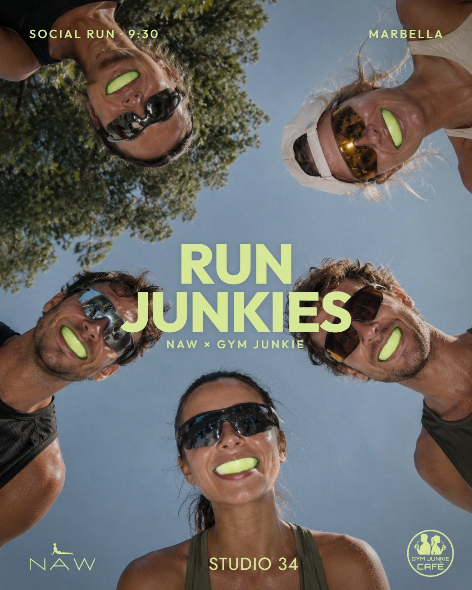
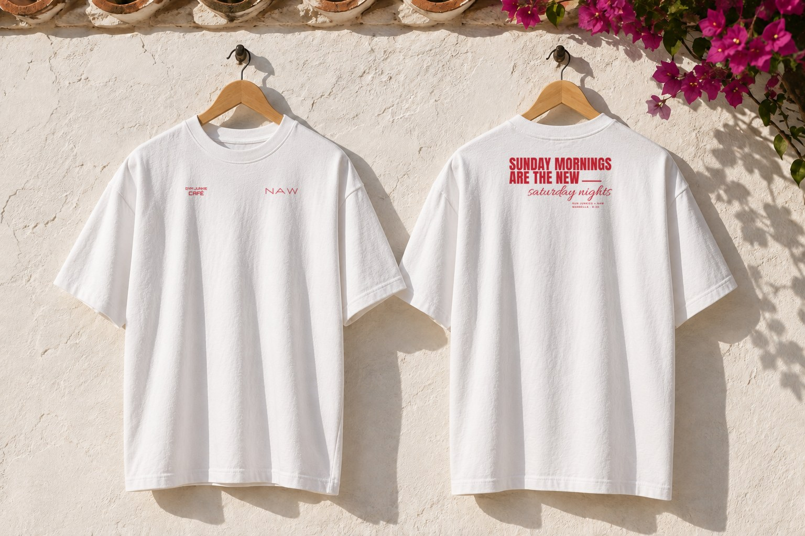
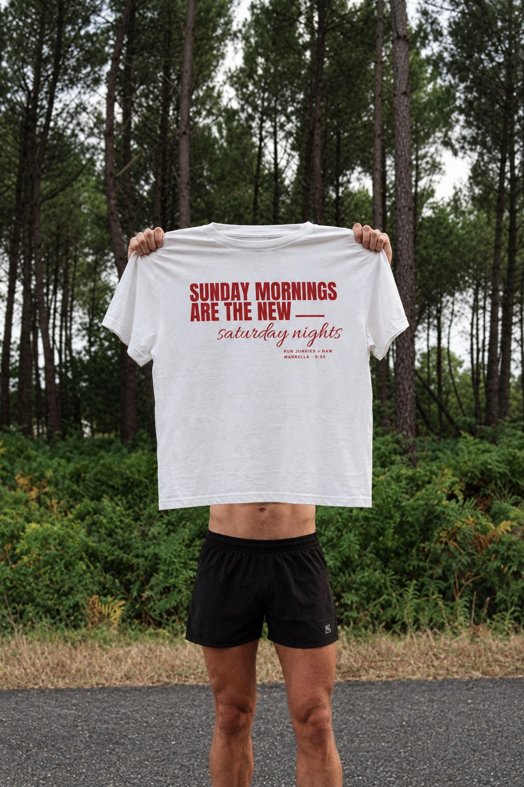
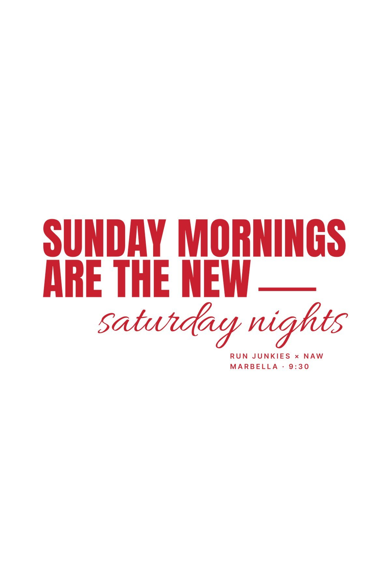
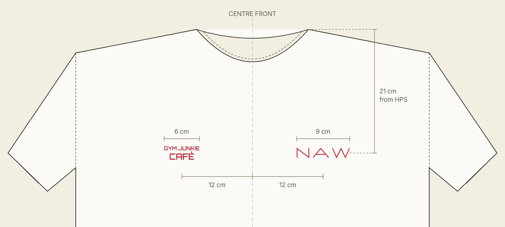
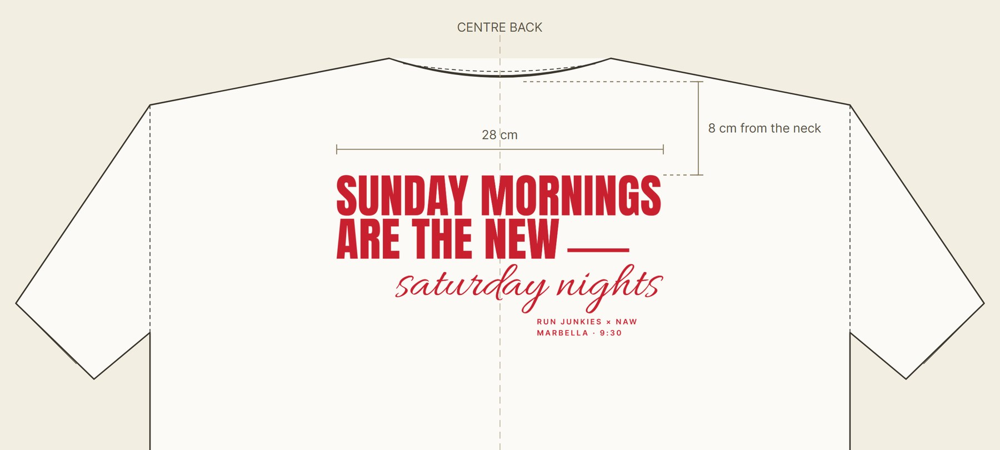
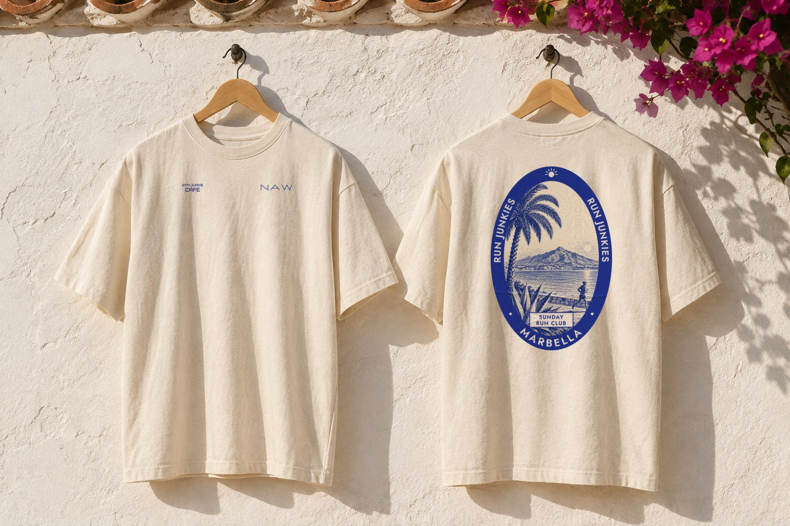
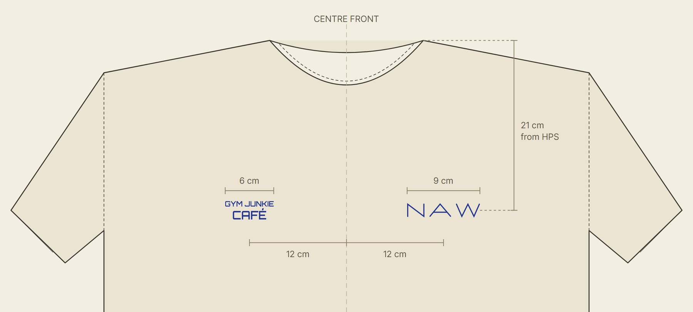
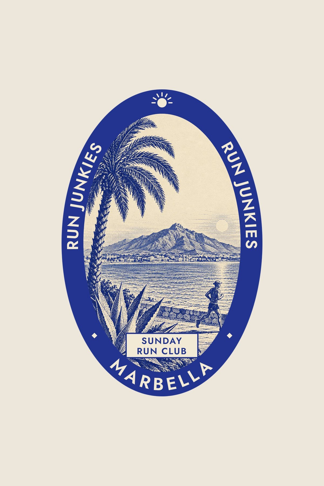

A Sunday run club that ends at Gym Junkie with a juice. Here is the post that launches it and two shirt options for the club, made by NAW. Have a look and pick the one you like.

Five runners lean over the camera after the run, each one biting a lime wedge like a mouthguard. It is the club in one picture: sweat, friends and a fresh finish at Gym Junkie.
A white heavyweight tee in one brick red ink. On the back, one line across the shoulders: bold capitals and a handwritten finish that trade the Saturday night out for the Sunday morning run. On the front, the two brands side by side, as on Option B: Gym Junkie Café on the right chest and NAW on the left.





An ecru tee with an old hotel luggage label on the back, in one deep blue ink. Inside the oval, an engraving of the Marbella promenade: a palm, an agave, the sea, La Concha and a runner. On the front, the two brands side by side: Gym Junkie Café on the right chest and NAW on the left.



Tap your favourite and it opens an email with your choice. Colours, sizes and quantities can be adjusted once you have picked.